Show code
pacman::p_load(igraph, tidygraph, ggraph, visNetwork,
lubridate, # for date
clock, # for time
tidyverse, graphlayouts,
patchwork)Modelling, Visualising and Analysing Network Data with R
Note: This in-class exercise is similar to hands-on exercise 9 (simplified version).
For the purpose of this exercise, the following R packages will be used.
pacman::p_load(igraph, tidygraph, ggraph, visNetwork,
lubridate, # for date
clock, # for time
tidyverse, graphlayouts,
patchwork)The data sets used in this hands-on exercise is from an oil exploration and extraction company. There are two data sets. One contains the nodes data and the other contains the edges (also know as link) data.
GAStech-email_edges.csv which consists of two weeks of 9063 emails correspondances between 55 employees.
GAStech_email_nodes.csv which consist of the names, department and title of the 55 employees.
Use read_csv() of readr package to import GAStech_email_node.csv and GAStech_email_edges-v2.csv into RStudio environment.
GAStech_nodes <- read_csv("data/GAStech_email_node.csv")
GAStech_edges <- read_csv("data/GAStech_email_edge-v2.csv")The code chunk below will be used to perform the changes with the use of dmy() and wday() to extract the date and day of week respectively.
Note that the initial date format is in character format instead of date format.
GAStech_edges <- GAStech_edges %>%
mutate(SendDate = dmy(SentDate)) %>%
mutate(Weekday = wday(SentDate, # to extract the day of the week
label = TRUE,
abbr = FALSE)) # e.g if abbr = TRUE, value will be Mon instead of MondayGAStech_edges data.frame reveals that it consists of individual e-mail flow records.
The code chunk below aggregates the individual by date, senders, receivers, main subject and day of the week, and filter “work related” MainSubject.
GAStech_edges_aggregated <- GAStech_edges %>%
filter(MainSubject == "Work related") %>%
group_by(source, target, Weekday) %>%
summarise(Weight = n()) %>%
filter(source!=target) %>% # to filter out senders who sends to self
filter(Weight > 1) %>% # to filter out senders that only send out 1 email
ungroup()Table below shows the data structure of the reformatted GAStech_edges_aggregated data frame.
glimpse(GAStech_edges_aggregated)Rows: 1,372
Columns: 4
$ source <dbl> 1, 1, 1, 1, 1, 1, 1, 1, 1, 1, 1, 1, 1, 1, 1, 1, 1, 1, 1, 1, 1,…
$ target <dbl> 2, 2, 2, 2, 2, 3, 3, 3, 3, 3, 4, 4, 4, 4, 4, 5, 5, 5, 5, 5, 6,…
$ Weekday <ord> Sunday, Monday, Tuesday, Wednesday, Friday, Sunday, Monday, Tu…
$ Weight <int> 5, 2, 3, 4, 6, 5, 2, 3, 4, 6, 5, 2, 3, 4, 6, 5, 2, 3, 4, 6, 5,…Note: Use class(GAStech_nodes) in R console to check the structure of the data frame, need to ensure that it should be a tibble data frame.
Graph data model will be created using tidygraph package. Tidygraph provides a tidy API for graph/network manipulation.
Note: The current network data itself is not tidy, but it can be envisioned as two tidy tables (1) for node data and (2) for edge data.
Two functions of tidygraph package can be used to create network objects, they are:
tbl_graph() creates a tbl_graph network object from nodes and edges data.
as_tbl_graph() converts network data and objects to a tbl_graph network. Below are network data and objects supported by as_tbl_graph()
a node data.frame and an edge data.frame,
data.frame, list, matrix from base,
igraph from igraph,
network from network,
dendrogram and hclust from stats,
Node from data.tree,
phylo and evonet from ape, and
graphNEL, graphAM, graphBAM from graph (in Bioconductor).
tbl_graph() to build tidygraph data modelUse tbl_graph() of tinygraph package to build an tidygraph’s network graph data.frame.
GAStech_graph <- tbl_graph(nodes = GAStech_nodes,
edges = GAStech_edges_aggregated,
directed = TRUE) # set to true to ensure that both parties have sent emails to each other before (a.k.a establish connection)Use code chunk below to check if the network graph is properly incorporated in the graph object. The output below will produce 54 nodes and 1,372 edges.
GAStech_graph# A tbl_graph: 54 nodes and 1372 edges
#
# A directed multigraph with 1 component
#
# Node Data: 54 × 4 (active)
id label Department Title
<dbl> <chr> <chr> <chr>
1 1 Mat.Bramar Administration Assistant to CEO
2 2 Anda.Ribera Administration Assistant to CFO
3 3 Rachel.Pantanal Administration Assistant to CIO
4 4 Linda.Lagos Administration Assistant to COO
5 5 Ruscella.Mies.Haber Administration Assistant to Engineering Group Mana…
6 6 Carla.Forluniau Administration Assistant to IT Group Manager
7 7 Cornelia.Lais Administration Assistant to Security Group Manager
8 44 Kanon.Herrero Security Badging Office
9 45 Varja.Lagos Security Badging Office
10 46 Stenig.Fusil Security Building Control
# ℹ 44 more rows
#
# Edge Data: 1,372 × 4
from to Weekday Weight
<int> <int> <ord> <int>
1 1 2 Sunday 5
2 1 2 Monday 2
3 1 2 Tuesday 3
# ℹ 1,369 more rowsThe nodes tibble data frame is activated by default, however, this can be changed to active data frame with the activate() function. Rearrange the rows in the edges tibble to list those with the highest “weight” first, followed by using activate() and then arrange().
Use code chunk below to perform the above steps.
GAStech_graph %>%
activate(edges) %>%
arrange(desc(Weight))# A tbl_graph: 54 nodes and 1372 edges
#
# A directed multigraph with 1 component
#
# Edge Data: 1,372 × 4 (active)
from to Weekday Weight
<int> <int> <ord> <int>
1 40 41 Saturday 13
2 41 43 Monday 11
3 35 31 Tuesday 10
4 40 41 Monday 10
5 40 43 Monday 10
6 36 32 Sunday 9
7 40 43 Saturday 9
8 41 40 Monday 9
9 19 15 Wednesday 8
10 35 38 Tuesday 8
# ℹ 1,362 more rows
#
# Node Data: 54 × 4
id label Department Title
<dbl> <chr> <chr> <chr>
1 1 Mat.Bramar Administration Assistant to CEO
2 2 Anda.Ribera Administration Assistant to CFO
3 3 Rachel.Pantanal Administration Assistant to CIO
# ℹ 51 more rowsggraph is an extension of ggplot2, making it easier to carry over basic ggplot skills to the design of network graphs.
There are three main aspects to a ggraph’s network graph, they are:
nodes,
edges and
layouts.
The code chunk below uses ggraph(), geom-edge_link() and geom_node_point() to plot a network graph by using GAStech_graph.
ggraph(GAStech_graph) +
geom_edge_link() +
geom_node_point()
Use theme_graph() to remove the x and y axes.
Note: geom_edge_link() and geom_node_point() are part of tidygraph. Separately, there is a difference between geom_edge_link() and geom_edge_arc() is in its line, the former is a vertical straight line, while the latter forms a curve line.
g <- ggraph(GAStech_graph) +
geom_edge_link(aes()) +
geom_node_point(aes())
g + theme_graph()
Use theme_graph() as well to change the color of the plot.
g <- ggraph(GAStech_graph) +
geom_edge_link(aes(colour = 'grey50')) +
geom_node_point(aes(colour = 'grey40'))
g + theme_graph(background = 'grey10',
text_colour = 'white')
ggraph support many layout for standard used, they are: star, circle, nicely (default), dh, gem, graphopt, grid, mds, sphere, randomly, fr, kk, drl and lgl. Figures below and on the right show layouts supported by ggraph().
Use layout argument to define the layout to be used.
ggraph(GAStech_graph,
layout = "fr") +
geom_edge_link(aes()) +
geom_node_point(aes(colour = Department,
size = 1)) +
labs(title = "Layout as fr") +
theme_graph()+
theme(legend.position = "none")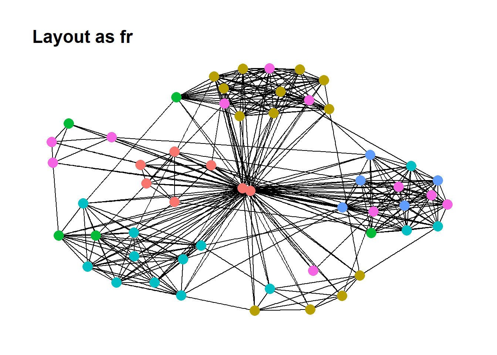
Self-exploratory segment to test out the different types of layout.
(g1 | g2 | g3) / (g4 | g5 | g6) / (g7 | g8 | g9) / (g10 | g11 | g12) /
(g13 | g14 | plot_spacer()) +
plot_annotation(tag_levels = 'A') +
plot_layout(widths = c(3,3,3),
heights = c(3,3,3,3,3))Code chunk below colour each node by referring to their respective departments (to include aesthetics).
g <- ggraph(GAStech_graph,
layout = "nicely") +
geom_edge_link(aes()) +
geom_node_point(aes(colour = Department,
size = 3))
g + theme_graph()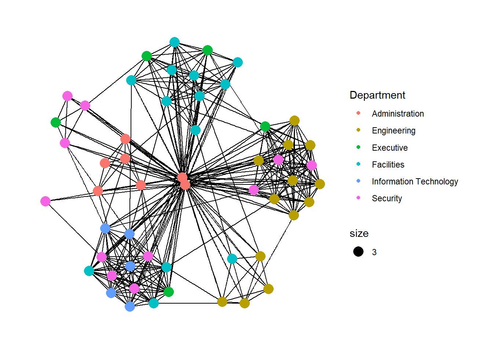
Code chunk below adjust the thickness of the edges which will be mapped with the Weight variable.
g <- ggraph(GAStech_graph,
layout = "nicely") +
geom_edge_link(aes(width=Weight), # thickness of line map to weight values
alpha=0.2) + # to introduce opacity on the line
scale_edge_width(range = c(0.1, 5)) + # to include scale (range) of the thickness
geom_node_point(aes(colour = Department),
size = 3)
g + theme_graph()There are three functions in ggraph to implement faceting, they are:
facet_nodes() whereby edges are only draw in a panel if both terminal nodes are present here,
facet_edges() whereby nodes are always drawn in all panels even if the node data contains an attribute named the same as the one used for the edge facetting, and
facet_graph() faceting on two variables simultaneously.
Code chunk below uses facet_edges().
set_graph_style()
g <- ggraph(GAStech_graph,
layout = "nicely") +
geom_edge_link(aes(width=Weight),
alpha=0.2) +
scale_edge_width(range = c(0.1, 5)) +
geom_node_point(aes(colour = Department),
size = 2)
g + facet_edges(~Weekday)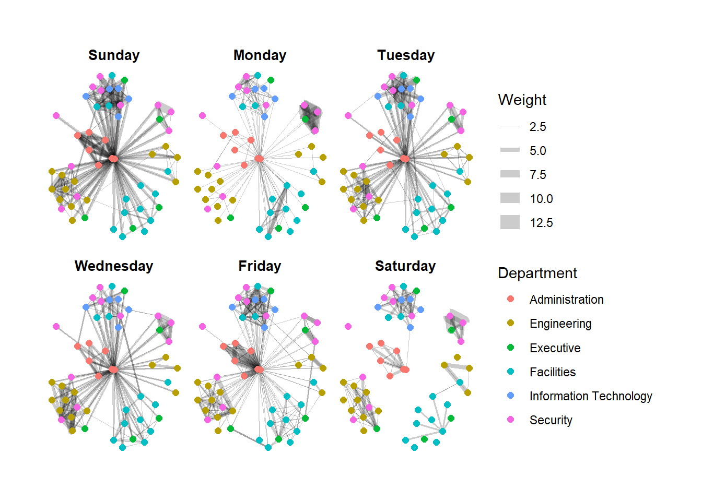
Code chunk below uses facet_edges(), and uses theme() to change the position of the legend.
set_graph_style()
g <- ggraph(GAStech_graph,
layout = "nicely") +
geom_edge_link(aes(width=Weight),
alpha=0.2) +
scale_edge_width(range = c(0.1, 5)) +
geom_node_point(aes(colour = Department),
size = 2) +
theme(legend.position = 'bottom')
g + facet_edges(~Weekday)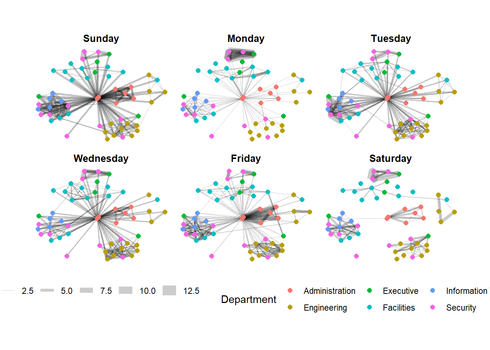
Code chunk below uses th_foreground() to add frame to each graph.
set_graph_style()
g <- ggraph(GAStech_graph,
layout = "nicely") +
geom_edge_link(aes(width=Weight),
alpha=0.2) +
scale_edge_width(range = c(0.1, 5)) +
geom_node_point(aes(colour = Department),
size = 2)
g + facet_edges(~Weekday) +
th_foreground(foreground = "grey80",
border = TRUE) +
theme(legend.position = 'bottom')Code chunk below uses facet_nodes().
set_graph_style()
g <- ggraph(GAStech_graph,
layout = "nicely") +
geom_edge_link(aes(width=Weight),
alpha=0.2) +
scale_edge_width(range = c(0.1, 5)) +
geom_node_point(aes(colour = Department),
size = 2)
g + facet_nodes(~Department)+
th_foreground(foreground = "grey80",
border = TRUE) +
theme(legend.position = 'bottom')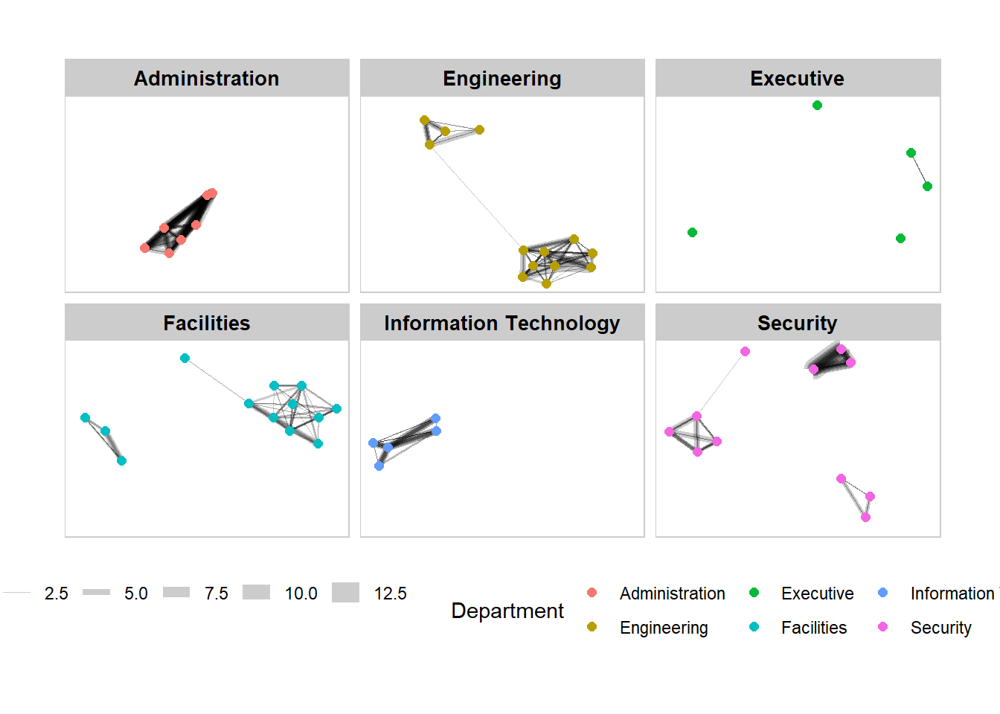
Centrality measures are a collection of statistical indices use to describe the relative important of the actors are to a network. There are four well-known centrality measures, namely: degree, betweenness, closeness and eigenvector.
g <- GAStech_graph %>%
mutate(betweenness_centrality = centrality_betweenness()) %>%
ggraph(layout = "fr") +
geom_edge_link(aes(width=Weight),
alpha=0.2) +
scale_edge_width(range = c(0.1, 5)) +
geom_node_point(aes(colour = Department,
size=betweenness_centrality))
g + theme_graph()
g <- GAStech_graph %>%
ggraph(layout = "fr") +
geom_edge_link(aes(width=Weight),
alpha=0.2) +
scale_edge_width(range = c(0.1, 5)) +
geom_node_point(aes(colour = Department,
size = centrality_betweenness()))
g + theme_graph()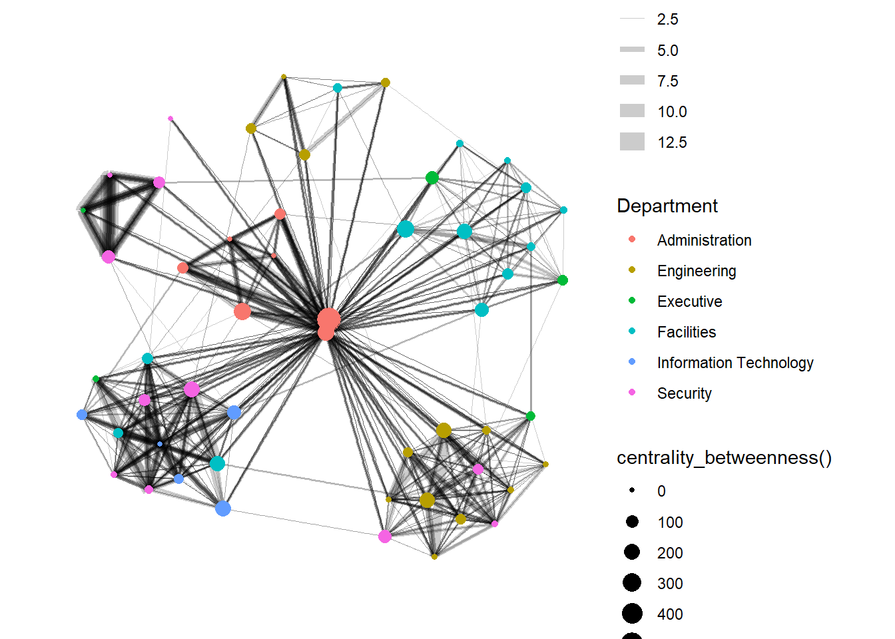
tidygraph package inherits many of the community detection algorithms imbedded into igraph, including
Edge-betweenness (group_edge_betweenness)
Leading eigenvector (group_leading_eigen)
Fast-greedy (group_fast_greedy)
Louvain (group_louvain), Walktrap (group_walktrap)
Label propagation (group_label_prop)
InfoMAP (group_infomap)
Spinglass (group_spinglass)
Optimal (group_optimal)
Some community algorithms are designed to take into account direction or weight, while others ignore it.
gc1 <- GAStech_graph %>%
mutate(community = as.factor(group_edge_betweenness(weights = Weight, directed = TRUE))) %>%
ggraph(layout = "fr") +
geom_edge_link(aes(width=Weight),
alpha=0.2) +
scale_edge_width(range = c(0.1, 5)) +
geom_node_point(aes(colour = community))
gc1 + theme_graph()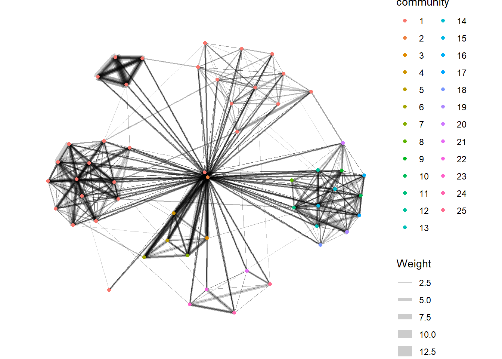
gc2 <- GAStech_graph %>%
mutate(community = as.factor(group_leading_eigen(weights = Weight, steps = -1, label = NULL,
options = arpack_defaults(), n_groups = NULL))) %>%
ggraph(layout = "fr") +
geom_edge_link(aes(width=Weight),
alpha=0.2) +
scale_edge_width(range = c(0.1, 5)) +
geom_node_point(aes(colour = community))
gc2 + theme_graph()gc3 <- GAStech_graph %>%
mutate(community = as.factor(group_edge_betweenness(weights = Weight, directed = TRUE, n_groups = NULL))) %>%
ggraph(layout = "fr") +
geom_edge_link(aes(width=Weight),
alpha=0.2) +
scale_edge_width(range = c(0.1, 5)) +
geom_node_point(aes(colour = community))
gc3 + theme_graph()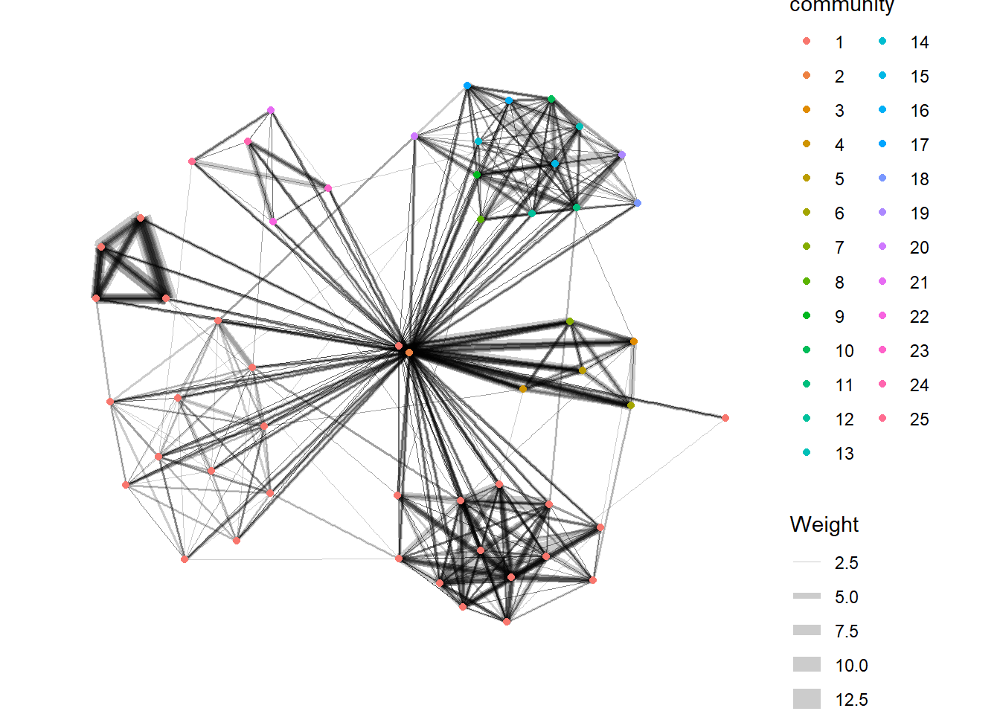
gc4 <- GAStech_graph %>%
mutate(community = as.factor(group_walktrap(weights = Weight, steps = 4, n_groups = NULL))) %>%
ggraph(layout = "fr") +
geom_edge_link(aes(width=Weight),
alpha=0.2) +
scale_edge_width(range = c(0.1, 5)) +
geom_node_point(aes(colour = community))
gc4 + theme_graph()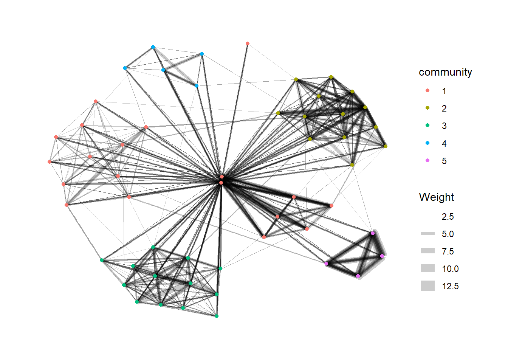
gc5 <- GAStech_graph %>%
mutate(community = as.factor(group_label_prop(weights = Weight, label = NULL, fixed = NULL))) %>%
ggraph(layout = "fr") +
geom_edge_link(aes(width=Weight),
alpha=0.2) +
scale_edge_width(range = c(0.1, 5)) +
geom_node_point(aes(colour = community))
gc5 + theme_graph()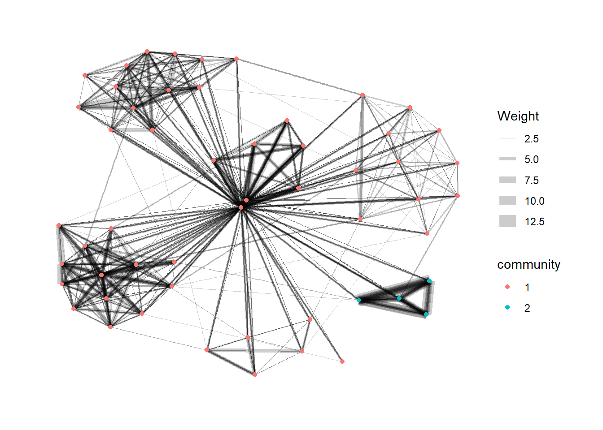
gc6 <- GAStech_graph %>%
mutate(community = as.factor(group_infomap(weights = NULL, node_weights = NULL, trials = 10))) %>%
ggraph(layout = "fr") +
geom_edge_link(aes(width=Weight),
alpha=0.2) +
scale_edge_width(range = c(0.1, 5)) +
geom_node_point(aes(colour = community))
gc6 + theme_graph()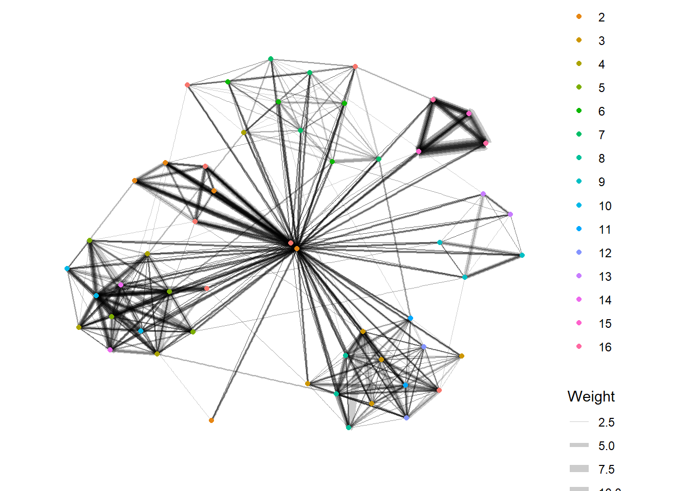
gc7 <- GAStech_graph %>%
mutate(community = as.factor(group_spinglass(weights = Weight))) %>%
ggraph(layout = "fr") +
geom_edge_link(aes(width=Weight),
alpha=0.2) +
scale_edge_width(range = c(0.1, 5)) +
geom_node_point(aes(colour = community))
gc7 + theme_graph()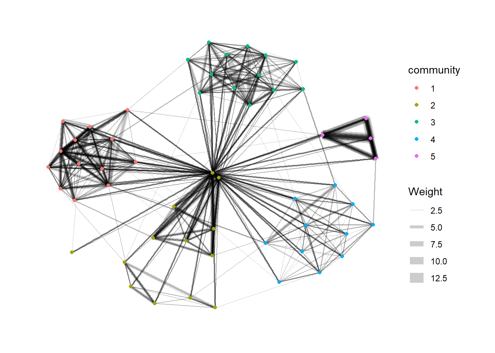
visNetwork() is a R package for network visualization, using vis.js javascript library.
visNetwork() function uses a nodes list and edges list to create an interactive graph.
The nodes list must include an “id” column, and the edge list must have “from” and “to” columns.
The function also plots the labels for the nodes, using the names of the actors from the “label” column in the node list.
Code chunk below prepares dataset for interactive network graph.
GAStech_edges_aggregated <- GAStech_edges %>%
left_join(GAStech_nodes, by = c("sourceLabel" = "label")) %>%
rename(from = id) %>%
left_join(GAStech_nodes, by = c("targetLabel" = "label")) %>%
rename(to = id) %>%
filter(MainSubject == "Work related") %>%
group_by(from, to) %>%
summarise(weight = n()) %>%
filter(from!=to) %>%
filter(weight > 1) %>%
ungroup()Code chunk below plots interactive network graph.
visNetwork(GAStech_nodes,
GAStech_edges_aggregated)Code chunk below uses Fruchterman and Reingold layout.
visNetwork(GAStech_nodes,
GAStech_edges_aggregated) %>%
visIgraphLayout(layout = "layout_with_fr") visNetwork() looks for a field called “group” in the nodes object and colour the nodes according to the values of the group field.
The code chunk below renames Department field to group.
GAStech_nodes <- GAStech_nodes %>%
rename(group = Department) Rerun with the code chunk below, visNetwork shades the nodes by assigning unique colour to each category in the group field.
visNetwork(GAStech_nodes,
GAStech_edges_aggregated) %>%
visIgraphLayout(layout = "layout_with_fr") %>%
visLegend() %>%
visLayout(randomSeed = 123)Code chunk below runs visEdges() which is used to symbolise the edges.
The argument arrows is used to define where to place the arrow.
The smooth argument is used to plot the edges using a smooth curve.
visNetwork(GAStech_nodes,
GAStech_edges_aggregated) %>%
visIgraphLayout(layout = "layout_with_fr") %>%
visEdges(arrows = "to",
smooth = list(enabled = TRUE,
type = "curvedCW")) %>%
visLegend() %>%
visLayout(randomSeed = 123)Code chunk below uses visOptions() to incorporate interactivity features in the data visualisation.
The argument highlightNearest highlights nearest when clicking a node.
The argument nodesIdSelection adds an id node selection creating an HTML select element.
visNetwork(GAStech_nodes,
GAStech_edges_aggregated) %>%
visIgraphLayout(layout = "layout_with_fr") %>%
visOptions(highlightNearest = TRUE,
nodesIdSelection = TRUE) %>%
visLegend() %>%
visLayout(randomSeed = 123)27 Modelling, Visualising and Analysing Network Data with R
Tidygraph - Group nodes and edges based on community structure